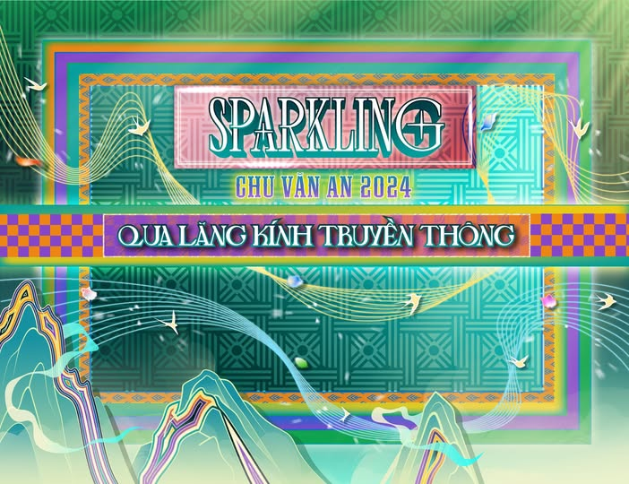
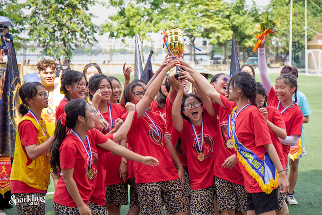
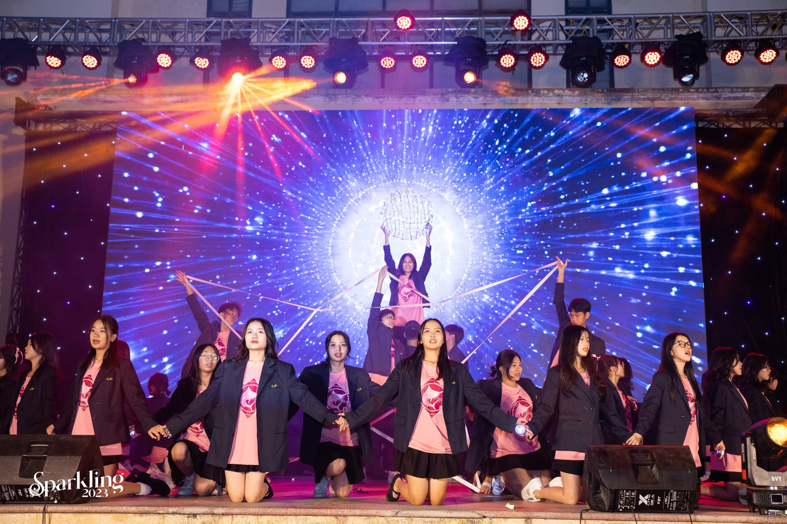

Lịch sử hình thành

Sparkling là sự kiện thường niên của THPT Chu Văn An, được tổ chức lần đầu bởi Đoàn trường
và các câu lạc bộ nhằm tạo sân chơi năng động cho học sinh. Qua nhiều năm, Sparkling đã trở thành
một trong những sự kiện biểu tượng của trường, thu hút sự tham gia đông đảo của học sinh và cựu học sinh.
Thời gian sự kiện
Sự kiện Sparkling Chu Văn An là chuỗi hoạt động thường niên kéo dài, diễn ra chủ yếu trong khoảng hai tháng cuối năm, từ tháng 10 đến tháng 11.
Chuỗi sự kiện này được phát động chính thức vào giữa tháng 10 và tập trung cao điểm vào tháng 11, nhằm chào mừng Ngày Nhà giáo Việt Nam (20/11) và ngày truyền thống của trường. Đỉnh điểm của Sparkling là Đêm Chung kết (Sparkling Night), thường được tổ chức vào các ngày 18, 19, hoặc 20 tháng 11, đánh dấu sự kết thúc rực rỡ của mùa lễ hội truyền thống này.
Mục đích của sự kiện

Sparkling được tổ chức với mục tiêu tạo sân chơi lành mạnh, thúc đẩy tinh thần đoàn kết, sáng tạo và năng động.
Sự kiện giúp học sinh rèn luyện kỹ năng, giảm áp lực học tập và tạo nên những kỷ niệm đẹp trong quãng thời gian
học tập tại Chu Văn An.
Sparkling Night

Sparkling Night là đêm nhạc đặc biệt khép lại chuỗi hoạt động Sparkling. Đây là nơi học sinh cháy hết mình
với các tiết mục biểu diễn, ánh sáng, âm thanh và sân khấu lớn. Sự kiện thường có sự góp mặt của các nghệ sĩ
khách mời, các ban nhạc và những tiết mục được đầu tư của học sinh.